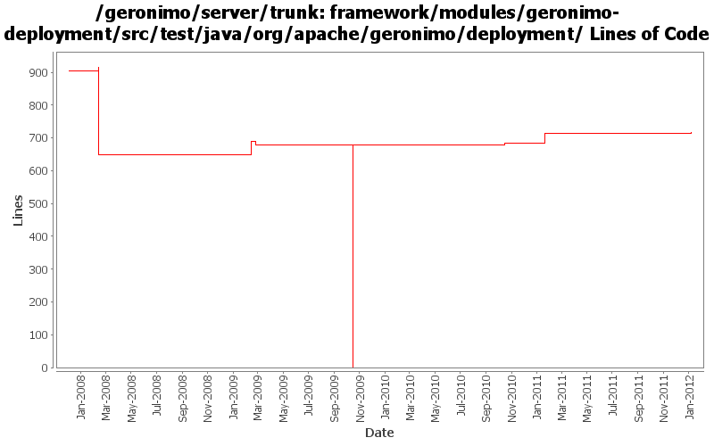

[root]/framework/modules/geronimo-deployment/src/test/java/org/apache/geronimo/deployment

| Author | Changes | Lines of Code | Lines per Change |
|---|---|---|---|
| Totals | 23 (100.0%) | 849 (100.0%) | 36.9 |
| djencks | 15 (65.2%) | 734 (86.5%) | 48.9 |
| gawor | 3 (13.0%) | 59 (6.9%) | 19.6 |
| xuhaihong | 3 (13.0%) | 47 (5.5%) | 15.6 |
| rickmcguire | 1 (4.3%) | 5 (0.6%) | 5.0 |
| genspring | 1 (4.3%) | 4 (0.5%) | 4.0 |
GERONIMO-6251 determine if server is actually fully started, provide access to DependencyManager for osgi metadata purposes
2 lines of code changed in 1 file:
now directory is valid manifest classpath entry, correct the unit testing,
4 lines of code changed in 1 file:
GERONIMO-5680 Remove dynamic import * and use calculated import packages on the runtime, only for deployed applications now
31 lines of code changed in 1 file:
reduce the number of directories left in the temp dir after a deploy
5 lines of code changed in 1 file:
GERONIMO-5408. Attach classpaths to modules, and combine them into the DeploymentContext bundle-classpath
22 lines of code changed in 1 file:
GERONIMO-5030: Initial refactoring of some of the module deployment code to support deployment of Bundles. Also, implemented rfc66 extender that can actually deploy WABs with simple servlets and jsps.
15 lines of code changed in 1 file:
add DelegatingBundle that can delegate calls to multiple Bundles and remove classSource support
2 lines of code changed in 1 file:
GERONIMO-5008 Create util methods for all the Geronimo components
16 lines of code changed in 2 files:
GERONIMO-4916 step 2 move sandbox osgi framework into trunk
678 lines of code changed in 2 files:
GERONIMO-4916 step 1 remove old framwork
0 lines of code changed in 2 files:
GERONIMO-4293 A lot more generics updates in kernel
3 lines of code changed in 1 file:
Handle directory entries in manifest. Patch from Ivan (GERONIMO-4251)
42 lines of code changed in 1 file:
GERONIMO-3840 fix the build: introduce a MockConfigurationManager used everywhere
16 lines of code changed in 2 files:
GERONIMO-3840 sort the modules before trying to load them
13 lines of code changed in 2 files:
GERONIMO-3607 Add 'assemble a server' support to geronimo and use it from car-maven-plugin and gshell. Not yet available in the console. Better repository support would be desirable
0 lines of code changed in 4 files: